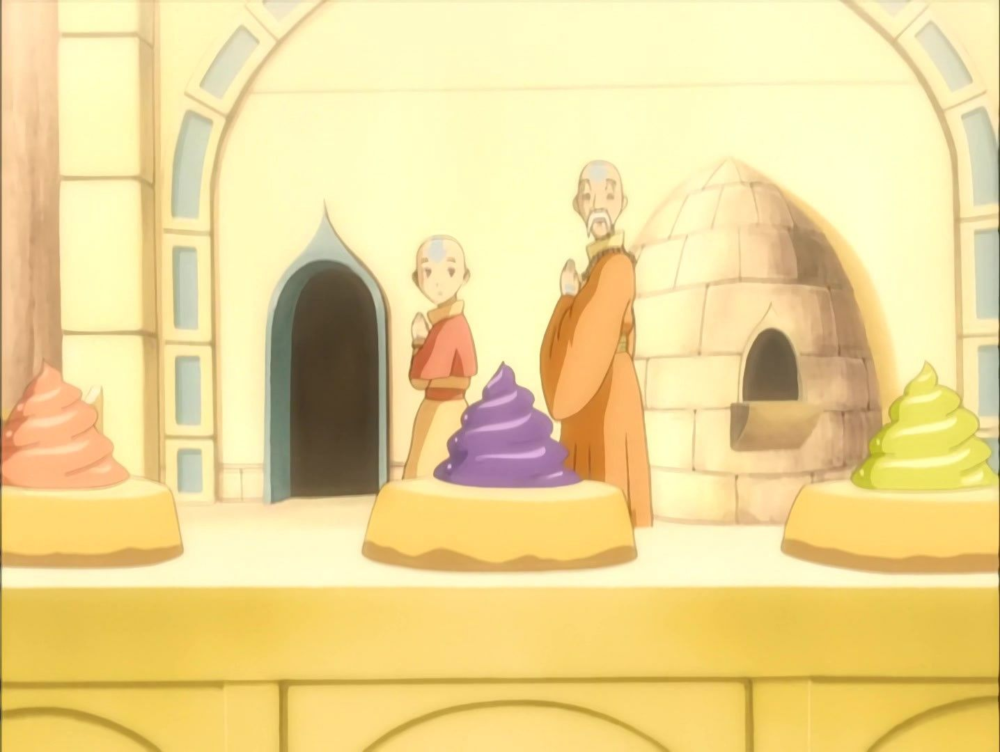

Fruit Pies

An extra-easy wonderfully refreshing cream cheese and mixed fruit pie.
The fruit pie was one of the Air Nomads' most popular desserts. The monks sold them for one silver piece each and donated the profits to charity. According to Monk Gyatso, the secret to the pie's taste was the gooey filling, and they came in four distinct colors: orange, purple, red, and yellow.
Ingredients
- 1 (9 inch) frozen pie crust, thawed
- 1 (8 ounce) package cream cheese, softened
- ⅓ cup white sugar
- 1 (11 ounce) can mandarin oranges, drained
- 1 cup fresh strawberries, halved
- 4 kiwi, peeled and sliced
- 1 cup fresh raspberries
- 1 cup fresh blueberries
Instructions
- Preheat oven to 400 degrees F (200 degrees C).
- Roll pastry into an 11 inch circle. Lay flat on a baking sheet or pizza pan. Prick several times with a fork. Bake in preheated oven for 12 to 15 minutes, until light brown. Remove and allow to cool completely.
- In a small mixing bowl, beat together cream cheese and sugar until mixture is creamy and smooth. Spread evenly onto cooled pastry. Arrange fruit in a decorative pattern over cream cheese layer. Chill until ready to serve.
Home